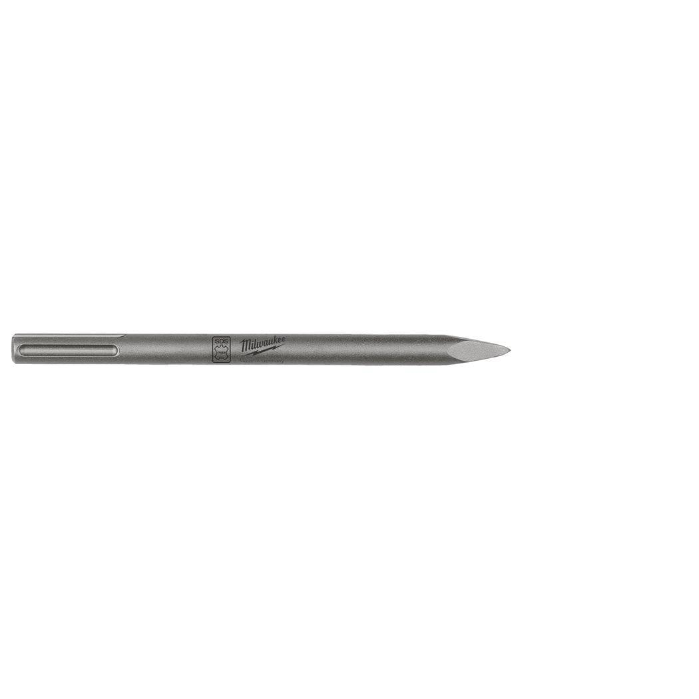
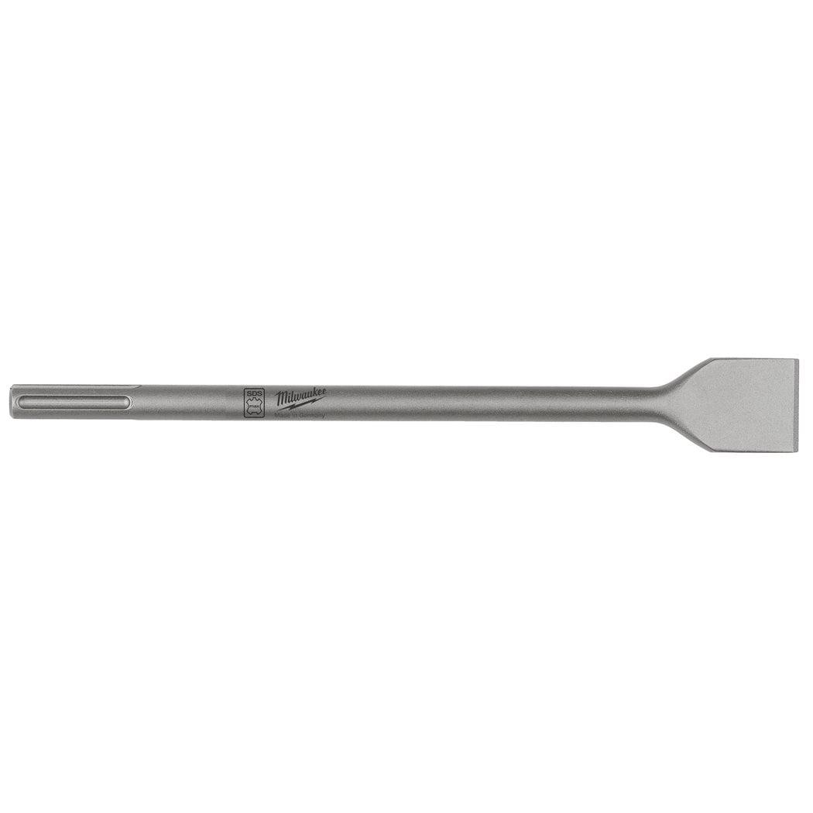
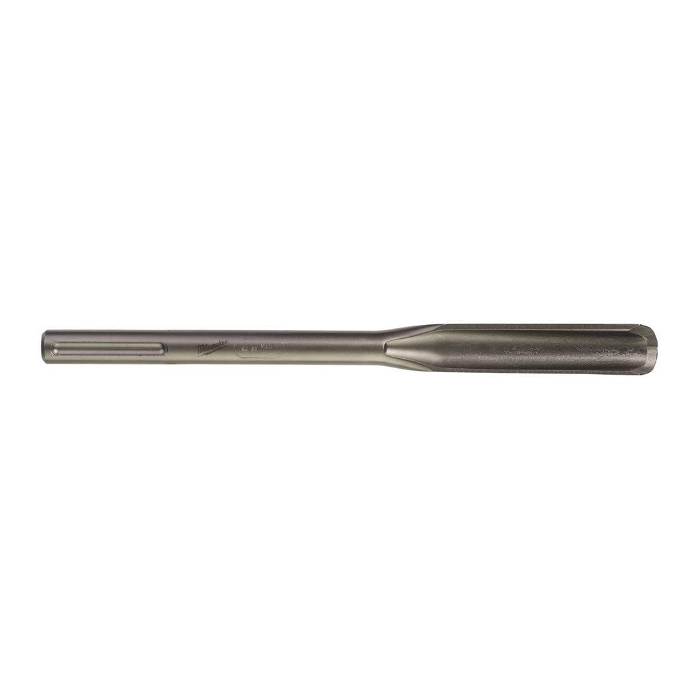
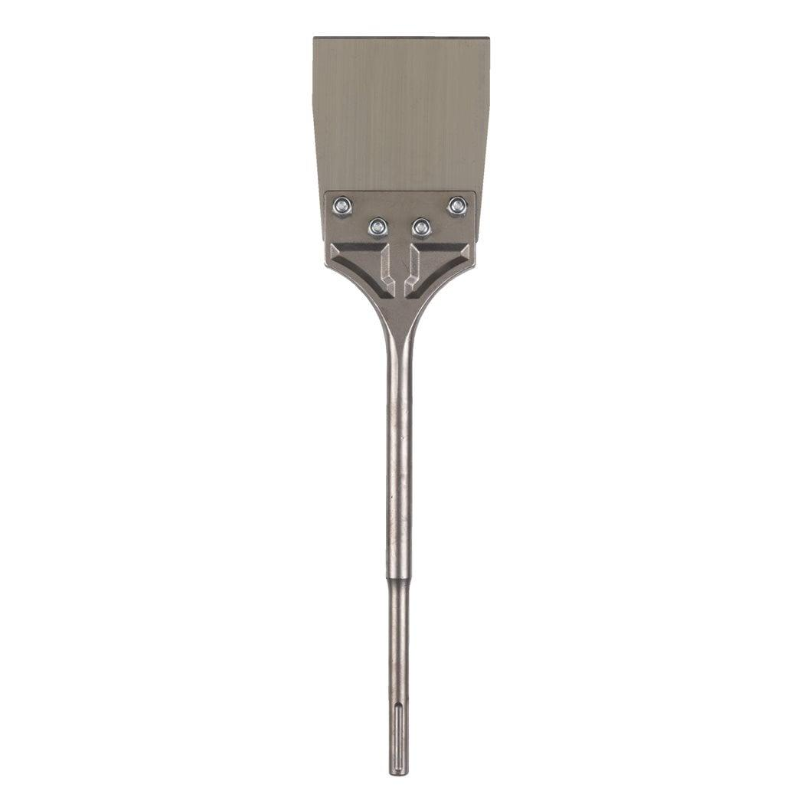

<div style="display:flex;flex-wrap:wrap;gap:8px"></div><h2>Features</h2><div><ul><li>Suitable for driving hammering electrode / ground rods. Not suitable for driving rebar or steel rods.</li></ul></div><div><div><h2>Information</h2><table><tr><td>Blade width (mm)</td><td>⌀ 22.2</td></tr><tr><td>Diameter (mm)</td><td>22.2</td></tr><tr><td>Pack quantity</td><td>1</td></tr><tr><td>Total length (mm)</td><td>220</td></tr><tr><td>Article Number</td><td>4932451356</td></tr><tr><td>EAN</td><td>4002395159055</td></tr></table></div></div>